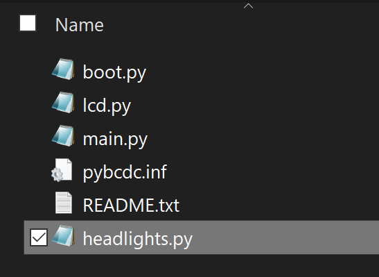

Debugging
While MicroPython does not have the full debugging experience found with Visual Studio and TinyCLR OS, the built in REPL provides some interesting uses. Thanks to the MicroPython's built-in compiler and runtime engine.
There are 2 very important hot-keys that are always handy, ctrl+C to exit from a looping program and going back to REPL and ctrl+D to soft reset the OS.
Assuming there is a robot with I2C-controlled headlight and we need to write a driver for those headlights. The first step would be to create a file in the virtual drive that show up when connecting the MicroPython running board.

We can now open the file and add the drivers.
from machine import Pin, SoftI2C
i2c4 = SoftI2C(scl=Pin("PB11"), sda=Pin("PB10"))
buf4= bytearray(4)
buf4[0]=0x01
def set(r,g,b):
buf4[1]=r
buf4[2]=g
buf4[3]=b
i2c4.writeto(0x01, buf4)
set(100,100,0)
When saving the file, we need to make sure to observe the activity LED to make sure the file is done saving, which takes few seconds.
The REPL interface can now be used to import the driver we have just created, import headlights.
Looking at the driver example, it creates a set function and then it calls it with colors 100,100,0 for RGB (Yellow).
Tip
import only works once on any module. Calling it a second time has no effect.
We now can set the headlight colors, purple for example headlights.set(100,0,100).
Another option now is to include a flashing lights loop on power up, using main.py file.
We will modify main.py contents:
import headlights
import time
while True:
headlights.set(100,0,0)
time.sleep(0.2)
headlights.set(0,0,100)
time.sleep(0.2)
Do not reset the board manually, instead use ctrl+D to soft reset. The LEDs will flash red and blue, like a police car!
To exit the loop and reuse REPL, use ctrl+C. And then turn the headlights off headlights.set(0,0,0). The system does not need import headlights as this was done earlier when main.py was loaded.